#minecraft:dirt
物品标签 · 25 个已收录成员
标签成员 (25)
 苍白苔藓块
苍白苔藓块minecraft:pale_moss_block
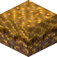
地衣结壳土atmospheric:crustose
 覆草泥土
覆草泥土bountifulfares:grassy_dirt
 核桃碎料块
核桃碎料块bountifulfares:walnut_mulch_block
 棕榈碎料块
棕榈碎料块bountifulfares:palm_mulch_block
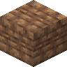
泥土砖environmental:dirt_bricks
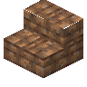
泥土砖楼梯environmental:dirt_brick_stairs
 泥土砖台阶
泥土砖台阶environmental:dirt_brick_slab
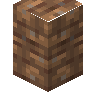
泥土砖墙environmental:dirt_brick_wall
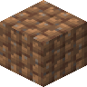
泥土瓦environmental:dirt_tiles
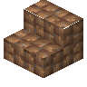
泥土瓦楼梯environmental:dirt_tile_stairs
 泥土瓦台阶
泥土瓦台阶environmental:dirt_tile_slab
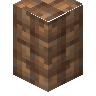
泥土瓦墙environmental:dirt_tile_wall
 沙土
沙土natures_spirit:sandy_soil
 黑硅岩
黑硅岩natures_spirit:chert
 红苔藓块
红苔藓块natures_spirit:red_moss_block
 泥土
泥土minecraft:dirt
 草方块
草方块minecraft:grass_block
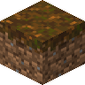
灰化土minecraft:podzol
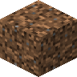
砂土minecraft:coarse_dirt
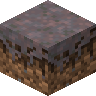
菌丝体minecraft:mycelium
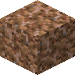
缠根泥土minecraft:rooted_dirt
 苔藓块
苔藓块minecraft:moss_block
 泥巴
泥巴minecraft:mud
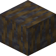
沾泥的红树根minecraft:muddy_mangrove_roots